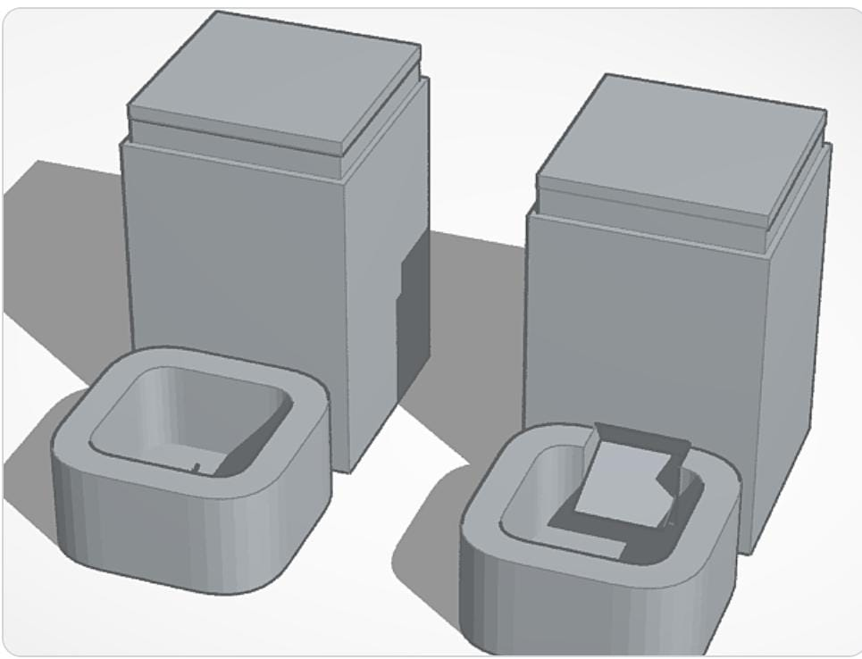
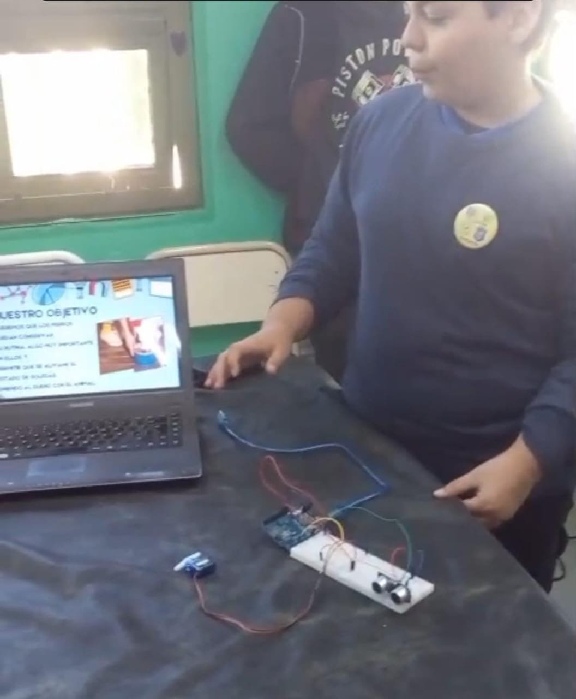
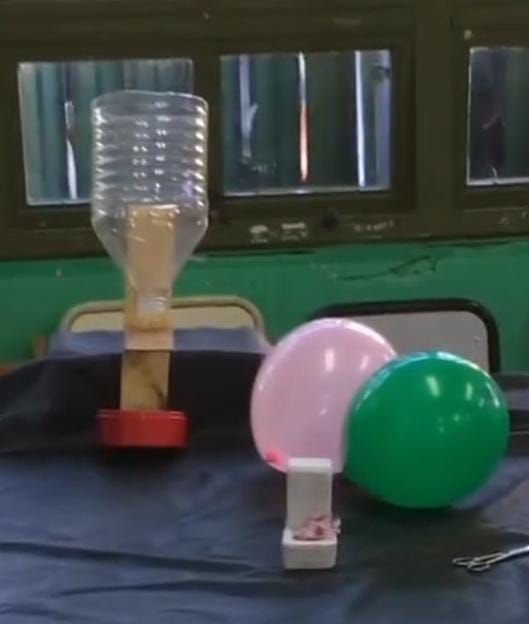

El ComeDog es un comedero automático con monitoreo que busca el bienestar integral de la mascota cuando se encuentra sola, evitando problemas de salud mental que pueden derivar en problemas físicos a largo plazo. Este proyecto combina automatización, seguridad y amor por los animales.



